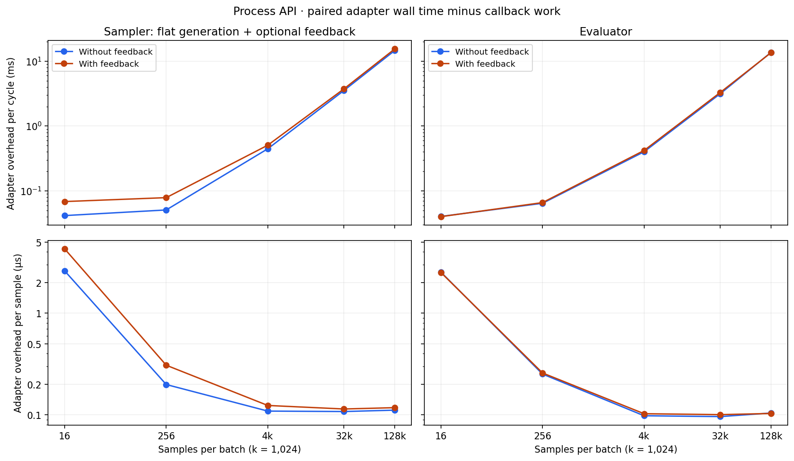

Process API overhead
completed · 0.0 seconds
Real Rust adapters and Python SDK; no database. Three warmup calls are discarded; 32–128 measured calls per case in the current harness (saved raw timings retain the actual counts). Startup is excluded and retained separately.
Overhead includes packing, validation, pipes, native generation decoding/evaluator accumulation, result cleanup and scheduling. It is not pure wire latency. Sampler training cycles sum generation and feedback costs at the same batch size.
Sampler generation remains flat. Generation::into_batch() in older measurements only unwrapped a LatentBatchSpec; it did not expand evaluator Points. Both roles time result cleanup, with callback time subtracted per call.
The generic evaluator returns per-sample values over IPC in both modes for accumulation; enabling feedback additionally retains weighted values. Similar evaluator curves are expected.
PNG · SVG · CSV

| operation | batch | feedback | calls | wall us | callback us | overhead us | overhead median us | overhead fraction |
|---|
| eval | 16 | False | 640 | 42.1 | 1.66 | 40.5 | 39.4 | 0.961 |
| eval | 16 | True | 640 | 41.8 | 1.62 | 40.2 | 39.3 | 0.961 |
| generate | 16 | False | 640 | 50.2 | 8.53 | 41.7 | 40.5 | 0.83 |
| generate | 16 | True | 640 | 51 | 8.58 | 42.4 | 41.2 | 0.832 |
| feedback | 16 | True | 640 | 29.3 | 3.14 | 26.1 | 25.8 | 0.893 |
| eval | 256 | False | 640 | 66.5 | 2 | 64.5 | 63.4 | 0.97 |
| eval | 256 | True | 640 | 68.1 | 1.97 | 66.1 | 64.2 | 0.971 |
| generate | 256 | False | 640 | 61.6 | 10.7 | 50.9 | 49.6 | 0.827 |
| generate | 256 | True | 640 | 62.1 | 10.8 | 51.2 | 49.9 | 0.825 |
| feedback | 256 | True | 640 | 30.9 | 3.33 | 27.6 | 27.2 | 0.892 |
| eval | 4096 | False | 640 | 407 | 5.18 | 402 | 408 | 0.987 |
| eval | 4096 | True | 640 | 426 | 5.24 | 421 | 423 | 0.988 |
| generate | 4096 | False | 640 | 485 | 38.8 | 446 | 448 | 0.92 |
| generate | 4096 | True | 640 | 499 | 39 | 460 | 453 | 0.922 |
| feedback | 4096 | True | 640 | 52.6 | 5.21 | 47.3 | 47.3 | 0.901 |
| eval | 32768 | False | 160 | 3.19e+03 | 39.6 | 3.15e+03 | 3.15e+03 | 0.988 |
| eval | 32768 | True | 160 | 3.33e+03 | 38.3 | 3.3e+03 | 3.28e+03 | 0.989 |
| generate | 32768 | False | 160 | 3.8e+03 | 267 | 3.53e+03 | 3.57e+03 | 0.93 |
| generate | 32768 | True | 160 | 3.75e+03 | 240 | 3.51e+03 | 3.51e+03 | 0.936 |
| feedback | 32768 | True | 160 | 250 | 19.5 | 231 | 229 | 0.922 |
| eval | 131072 | False | 160 | 1.38e+04 | 142 | 1.37e+04 | 1.4e+04 | 0.99 |
| eval | 131072 | True | 160 | 1.37e+04 | 140 | 1.35e+04 | 1.46e+04 | 0.99 |
| generate | 131072 | False | 160 | 1.55e+04 | 927 | 1.46e+04 | 1.56e+04 | 0.94 |
| generate | 131072 | True | 160 | 1.56e+04 | 926 | 1.46e+04 | 1.56e+04 | 0.94 |
| feedback | 131072 | True | 160 | 872 | 63.8 | 808 | 812 | 0.927 |
Configuration and provenance
{
"experiment": "process_api",
"schema_version": 2,
"status": "completed",
"batch_sizes": [
16,
256,
4096,
32768,
131072
],
"cpus": [
1,
3
],
"repetitions": 5,
"aggregation": "Mean of paired (wall - callback) timings pooled across five complete alternating-order runs; each run has equal call counts.",
"scope": "Native sampler generations and production evaluator accumulation; result cleanup included, startup excluded; shared host, not exclusive cores.",
"baseline_revision": "2300d10e30144675d5dc54de4f41bb82b8064bed",
"sampler_wrapper_correction": "Generation::into_batch only unwraps LatentBatchSpec; it does not expand Points. Earlier assessment was incorrect.",
"stages": {
"native": "5102bbb06ee4ae65c84929605dc63ff71da0ec4bcb5d754073b53d2022f2c6bf",
"offsets": "8f28b8c2303ccbd78c5d7614cf55ee5773e034b45f6414130156287089f98835",
"packing": "91d0dd432ce57333acc2b409a50bcd349583179d2d81592428d7c75863203474",
"flat": "2f4609aa7d0d5cea4e7d98a375edc4e6981084249a148c7ddf851d6ca7ca50ea",
"python-pack": "2f4609aa7d0d5cea4e7d98a375edc4e6981084249a148c7ddf851d6ca7ca50ea"
}
}